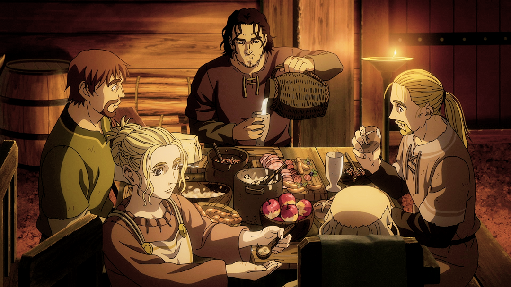
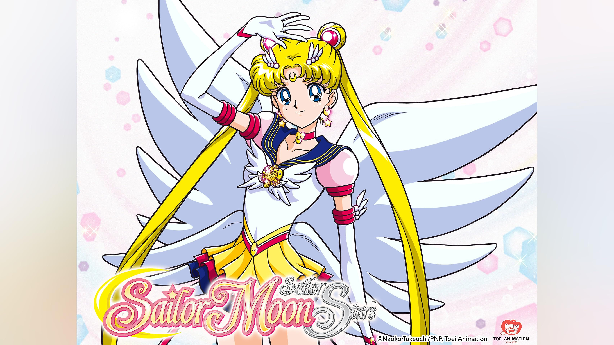

Shonen
Demografia tradicionalmente voltada ao público jovem, com frequência apresenta ação, aventura, amizade e superação.
Exemplos:
- Naruto
- One Piece
- My Hero Academia
A AniManga Hub é uma loja fictícia desenvolvida para um projeto acadêmico. A proposta é reunir produtos inspirados no universo dos animes e mangás em um só lugar.
O catálogo apresenta as categorias de mangás, camisetas e acessórios para fãs da cultura pop japonesa. Os produtos e contatos exibidos no site são demonstrativos.
Conheça os produtosAnimes são animações, em sua maioria produzidas no Japão, e mangás são histórias em quadrinhos japonesas. Ambos apresentam grande variedade de estilos, temas e públicos.
A cultura otaku reúne pessoas que compartilham o interesse por animes, mangás, jogos, ilustrações e outros aspectos da cultura pop japonesa. Cada fã vive esse interesse de um jeito próprio.
Demografia tradicionalmente voltada ao público jovem, com frequência apresenta ação, aventura, amizade e superação.

Demografia tradicionalmente voltada ao público adulto, pode explorar temas complexos, suspense e drama.

Shojo é uma demografia tradicionalmente voltada ao público jovem feminino; romance é um gênero presente em obras variadas.